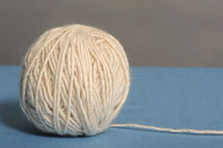
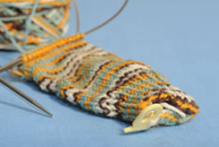
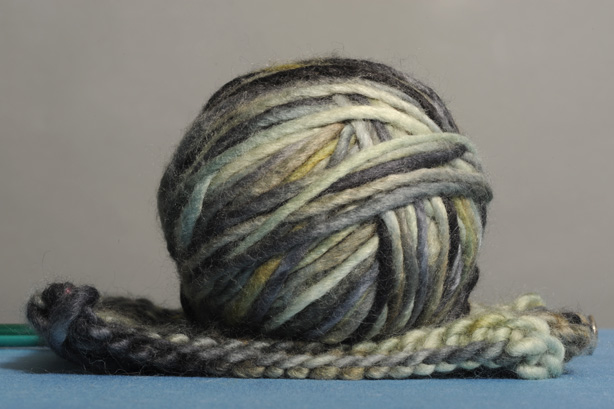

about us
 
LA CASITA - Spanish for "little house," La Casita offers a warm, friendly home away from home for knitters and crocheters to shop, relax, and enjoy one another's company. We invite you to come check out our beautiful yarns, take a class by the fireplace, lounge on the sofa, and have a drink and a bite to eat at the bar. Nuestra casita es su casita!
YARN SHOP - We carry a lovely selection of yarns including basic 100% wool, luxurious cashmere, superfine merino, decadent silk, mohair, and angora blends, and organic cottons, all available in a gorgeous array of colors. Our comprehensive assortment of needles, notions, patterns, books and accessories should ensure that you always have the right tool for the job. Whether you are just beginning or are a seasoned expert looking to explore new areas of the craft, we offer a variety of classes, workshops, and special events to help you hone and expand your skills.
CAFE - Decadent yarns aren't the only thing on our menu Our cafe offers a delicious assortment of cookies, brownies, cupcakes, and pastries to satisfy your sweet tooth, as well as a savory quiches, empanadas, and soups for when you've really stitched up an appetite. Warm up with a cappuccino, latte, hot chocolate, or cup of tea, and if that doesn't keep you smiling, we will gladly serve up a glass of wine or one of our specialty brews for a little extra cheer!
